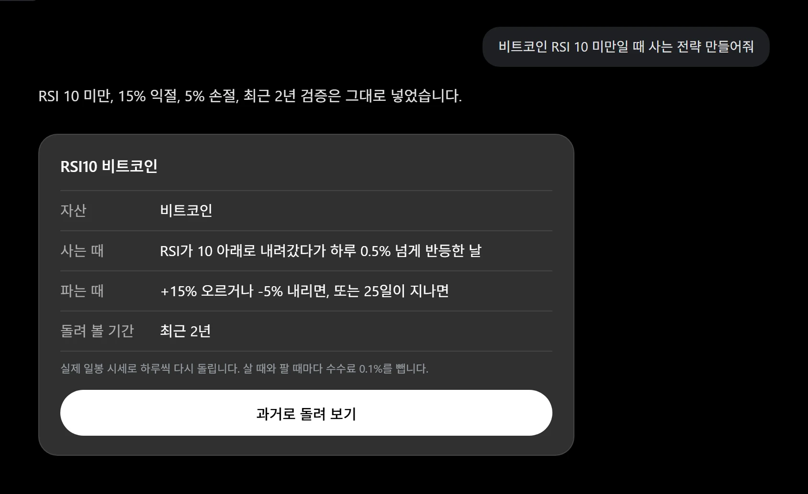
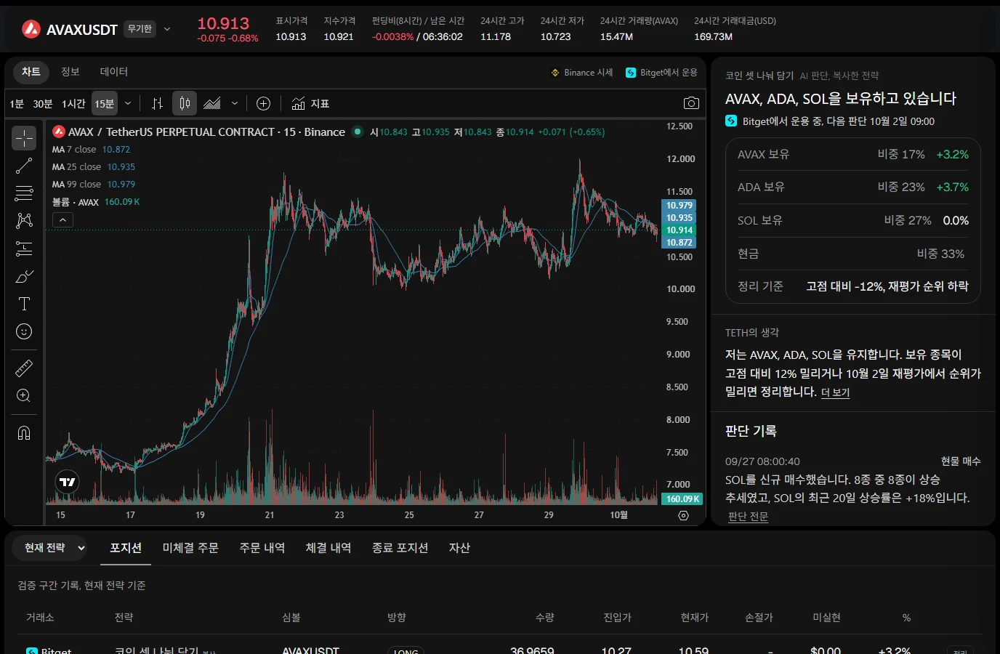
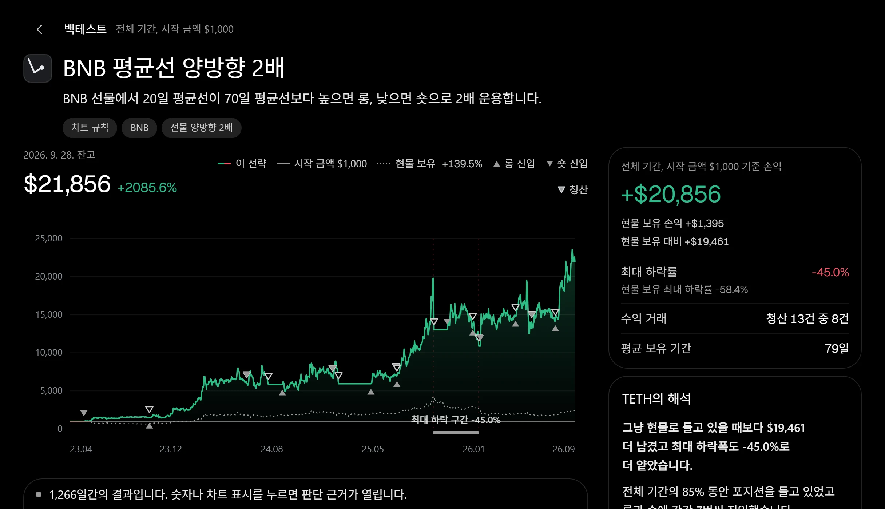
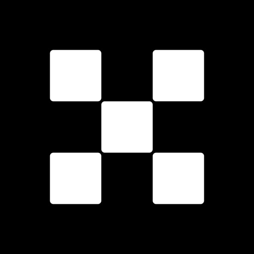
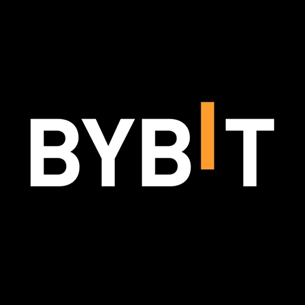
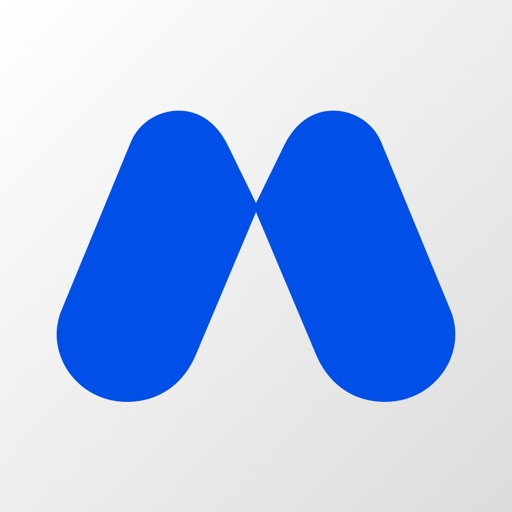
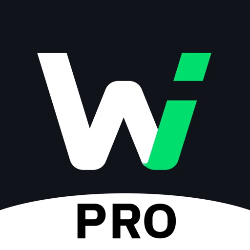
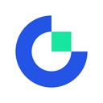
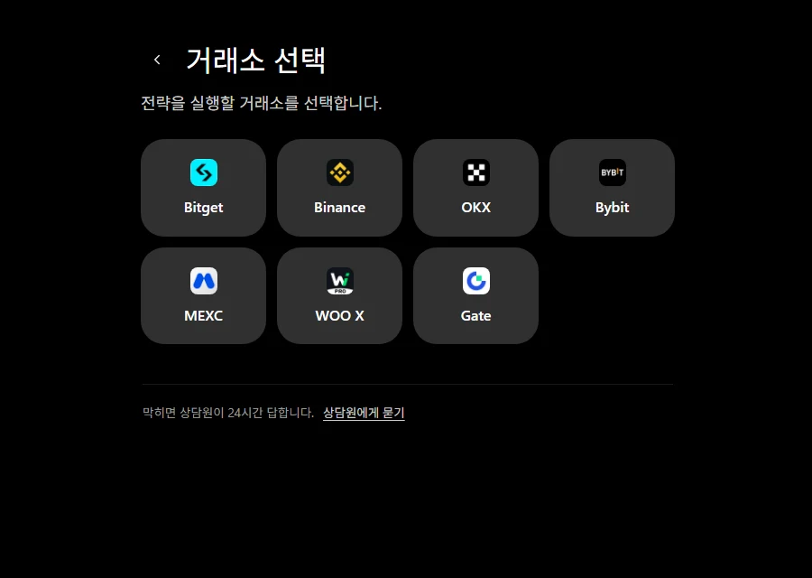
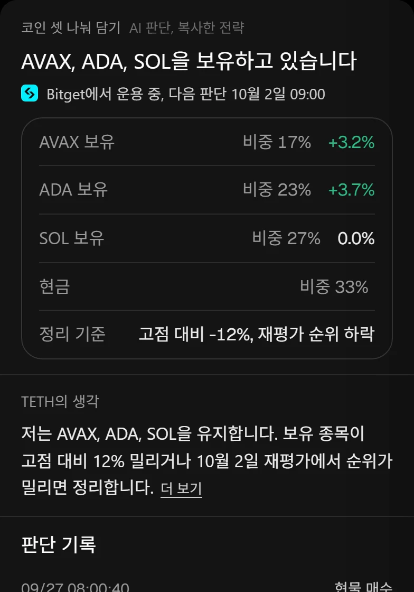

대화
말로 만드는 전략
아이디어를 말하면 TETH가 진입, 청산, 손절 조건이 정해진 전략으로 정리합니다.
- 빠진 조건은 TETH가 먼저 묻습니다
- 진입, 청산, 손절 조건으로 정리
- 차트 규칙, AI 판단, 혼합 전략

말로 전략을 만들고, 실제 시장 데이터로 검증하고, 지금 쓰는 거래소 계정에서 실행합니다.
영원히 무료, 카드 등록 없음

대화에서 시작해 실행까지 한 곳에서 이어집니다.
아이디어를 말하면 TETH가 진입, 청산, 손절 조건이 정해진 전략으로 정리합니다.


거래소를 고르고 한 번 승인하면, 전략이 그 계정에서 직접 주문합니다.







거래소 계정에 맞는 방법을 고릅니다.
말로 투자 전략을 만들고, 실제 시장 데이터로 검증하고, 연결한 거래소에서 실행하는 AI 트레이딩 서비스입니다.
검증을 마친 전략은 연결한 거래소 계정에서 자동으로 실행합니다. 시작 전에 직접 승인합니다.
Bitget, Binance, OKX, Bybit, MEXC, WOO X, Gate 7곳을 연결합니다.
전략을 만들면 바로 검증하고, 결과 화면에서 수익률, 가장 크게 내려간 폭, 판단 기록을 보여 줍니다.
잔고 조회와 주문 권한으로 연결합니다. 연결은 언제든 해제할 수 있습니다.
TETH 초대로 가입한 거래소 계정이면 TETH 초대 계정으로 씁니다. 영원히 무료, 카드 등록 없음입니다.
iOS, Android 앱을 준비하고 있습니다. 앱 다운로드 페이지에서 소식을 확인합니다.
아이디어 하나로 시작합니다. 전략을 만들고 검증한 뒤, 지금 쓰는 거래소에서 실행합니다.
무료로 시작하기영원히 무료, 카드 등록 없음
막히면 상담원이 24시간 답합니다. 상담원에게 묻기